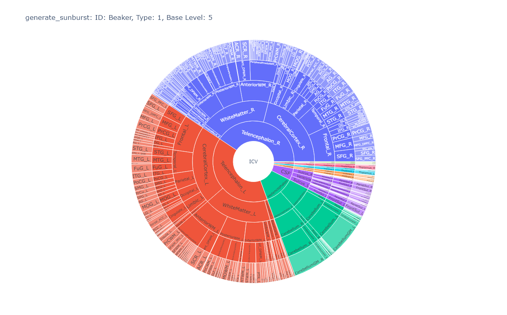
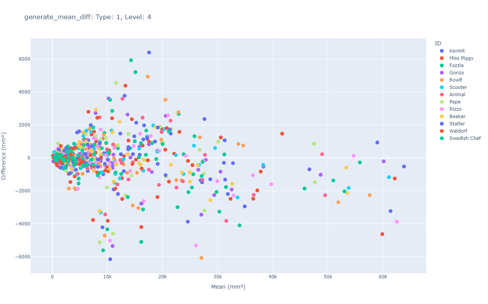
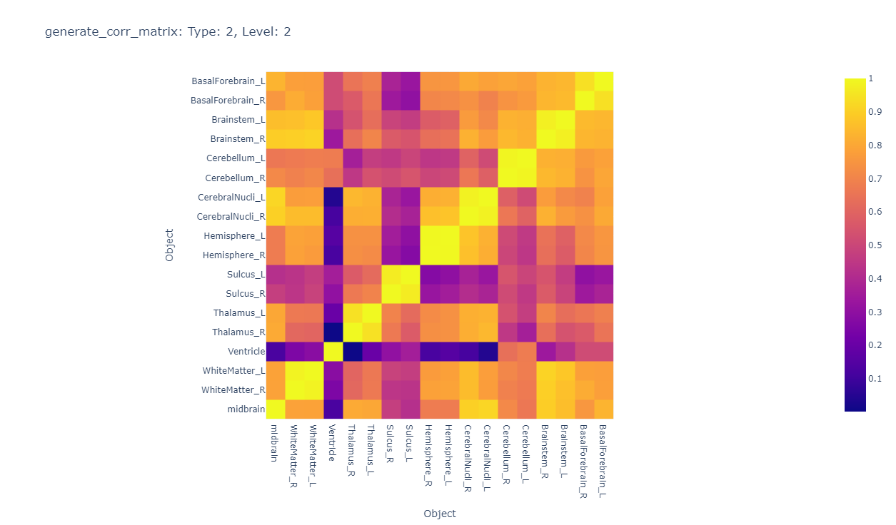

User Guide
An introductory guide to using MRICloudPy. View the basic example below or navigate to other guides.
Basic example workflow
Import package
import mricloudpy as mp
Creating dataset object from path to MRICloud data files
DATA_PATH = 'mricloudpy/sample_data'
SUBJECTS = ['Kermit', 'Miss Piggy', 'Fozzie', 'Gonzo', 'Rowlf', 'Scooter', 'Animal', 'Pepe', 'Rizzo', 'Beaker', 'Statler', 'Waldorf', 'Swedish Chef']
dataset = mp.Data(DATA_PATH, id_type='custom', id_list=SUBJECTS)
print(dataset.get_data())
Manipulating data
dataset_wide = dataset.long_to_wide()
print(dataset_wide)
Uses long_to_wide
Generating visualizations
dataset.generate_sunburst(type=2, id='Beaker', base_level=5)
dataset.generate_mean_diff(type=1, level=4)
dataset.generate_corr_matrix(type=2, level=2)
Uses generate_sunburst, generate_mean_diff, generate_corr_matrix
  
Covariate analysis
Appending covariate data
DATA_PATH = 'sample_data_covariate'
SUBJECTS = ['Kermit', 'Miss Piggy', 'Fozzie', 'Gonzo', 'Rowlf', 'Scooter', 'Animal', 'Pepe', 'Rizzo', 'Beaker', 'Statler', 'Waldorf', 'Swedish Chef']
COVARIATE_DATA_PATH = 'sample_data_covariate/covariate_data.csv'
dataset = mp.Data(path=DATA_PATH, id_type='custom', id_list=SUBJECTS)
covariate_dataset = dataset.append_covariate_data(COVARIATE_DATA_PATH, icv=True, tbv=True)
Uses Data, append_covariate_data
Normalizing covariate data
covariate_dataset = dataset.normalize_covariate_data(covariate_dataset, normalizing_factor='icv')
Running OLS regression
print(dataset.OLS(covariate_dataset, covariates=['Age', 'Cerebellum_L_Type1.0_L3.0', 'Hippo_L_Type1.0_L4.0'], outcome='CSF_Type1.0_L1.0', log=False))
Uses OLS
OLS Regression Results
==============================================================================
Dep. Variable: CSF_Type1.0_L1.0 R-squared: 0.500
Model: OLS Adj. R-squared: 0.363
Method: Least Squares F-statistic: 3.663
Date: Wed, 29 Nov 2023 Prob (F-statistic): 0.0474
Time: 11:35:16 Log-Likelihood: -161.73
No. Observations: 15 AIC: 331.5
Df Residuals: 11 BIC: 334.3
Df Model: 3
Covariance Type: nonrobust
=============================================================================================
coef std err t P>|t| [0.025 0.975]
---------------------------------------------------------------------------------------------
const -8.335e+04 5.36e+04 -1.554 0.148 -2.01e+05 3.47e+04
Age 999.5951 1160.986 0.861 0.408 -1555.717 3554.907
Cerebellum_L_Type1.0_L3.0 1.1907 0.570 2.088 0.061 -0.064 2.446
Hippo_L_Type1.0_L4.0 9.1820 4.366 2.103 0.059 -0.427 18.791
==============================================================================
Omnibus: 3.365 Durbin-Watson: 2.303
Prob(Omnibus): 0.186 Jarque-Bera (JB): 1.139
Skew: -0.276 Prob(JB): 0.566
Kurtosis: 4.232 Cond. No. 1.08e+06
==============================================================================
Notes:
[1] Standard Errors assume that the covariance matrix of the errors is correctly specified.
[2] The condition number is large, 1.08e+06. This might indicate that there are strong multicollinearity or other numerical problems.